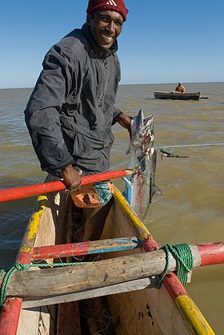

Vezo
| Vezo | |
|  Pecheur Vézo capturant un thazard à l'embouchure du fleuve Onilahi dans la baie de Saint-Augustin |
|
| Populations | |
|---|---|
| Madagascar | |
| Autre | |
| modifier |
|
{kind=link}
{kind=link}
Les Vezo (ou Veso ou Vezu), parfois appelés les « nomades de la mer », forment un peuple de Madagascar qui occupait autrefois le littoral sud-ouest ouest du pays et vivant essentiellement de la pêche.
Sommaire[masquer] |
Economie[modifier]
L'économie traditionnelle des Vezo est la pêche. Les pêcheurs partent en pirogue à balancier et à voile carrée parfois pour plus d'une semaine pour aller pêcher des requins et autres gros poissons ou tortues. Le poisson est ensuite séché au soleil ou apporté frais aux familles des villages dispersés de Tulear à Morombe. Une partie est vendue ou échangée aux villes situées à proximité, dont Morombe, leur centre principal.
Culture[modifier]
Leur tradition veut que les Vezo soient tous les descendants de l'union d'un ancêtre unique et d'une sirène.
Les Vezo embarquaient autrefois saisonnièrement leur famille pour suivre les poissons. Ils utilisaient alors leurs voiles et mâtures pour en faire des tentes pour dormir. Cette pêche nomade est devenue plus rare. Pour les Vezo, de nombreux esprits, dont ceux de personnes noyées, errent dans la mer et il ne faut pas pêcher plus que pour assurer ses besoins sous peine d'offenser les dieux marins qui pourraient se venger en les privant de poissons ou en provoquant un naufrage.
Voir aussi[modifier]
Articles connexes[modifier]
Bibliographie[modifier]
- (en) Sarajane Archdeacon, « Erotic grave sculpture of the Sakalava and Vezo », in Transition (Kampala), 3 (12), janvier-février 1964, p. 43-47
- (en) Rita Astuti, « Invisible objects : mortuary rituals among the Vezo of western Madagascar », in Res : anthropology and aesthetics (New York), 25, printemps 1994, p. 111-122
- (en) Rita Astuti, People of the sea : identity and descent among the Vezo of Madagascar, Cambridge University Press, Cambridge, NewYork, 1995, 188 p. (ISBN 0521433509)
- (en) Rita Astuti, « Food for pregnancy : procreation, marriage and images of gender among the Vezo of Western Madagascar », in Repenser "la femme malgache" : de nouvelles perspectives sur le genre à Madagascar, Institut de civilisations--Musée d'art et d'archéologie, Université d'Antananarivo, 2000, p. 173-192
- (fr) Rita Astuti, « C'est un garçon! C'est une fille! : Considérations sur le sexe et le genre à Madagascar et au-delà », in Gradhiva (Paris), n° 23, 1998 p. 67-80
- (fr) Ambroise Engelvin, Monographie d'une sous-tribu Sakalava : les vézos ou "enfants de la mer". Madagascar, Librairie Vincentienne et Missionnaire, Bellevue, 1936, 169 p.
- (fr) Bernard Koechlin, Les Vezo du sud-ouest de Madagascar : contribution à l'étude de l'éco-système de semi-nomades marins, Mouton, Paris, 1975, 243 p.
- (fr) Jacques Millot et A. Pascal, « Note sur la sorcellerie chez les Vezo de la région de Morombe », in Mémoires de l'Institut scientifique de Madagascar (Tananarive), Série C, Sciences humaines. 1 (1), 1952, p. 13-28
- (fr) Michel Norbert Rejela, La pêche traditionnelle Vezo du sud-ouest de Madagascar : un système d'exploitation depassé ?, Université de Bordeaux 3, 1993, 449 p. (thèse)
Filmographie[modifier]
- Balades à Madagascar, 6 films réalisés par Philippe Lecadre et Georges H. Morel (dont un consacré aux pêcheurs Vezo), Papavelo Images ; AK Video, 2005, 70' (DVD)
- Nomades du lagon, film documentaire de Luc Bongrand, CERIMES, Vanves, 2008, 52' (DVD)
Liens externes[modifier]
- (fr) Les Vezo